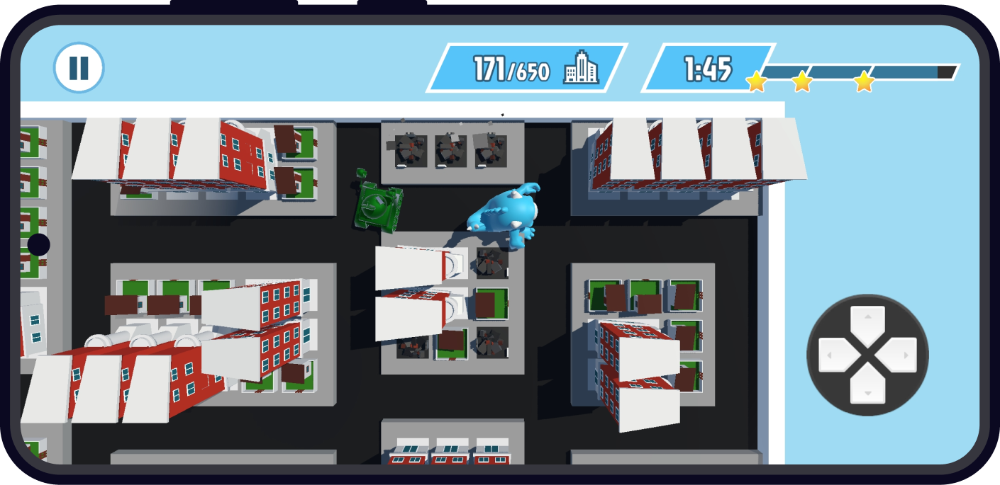
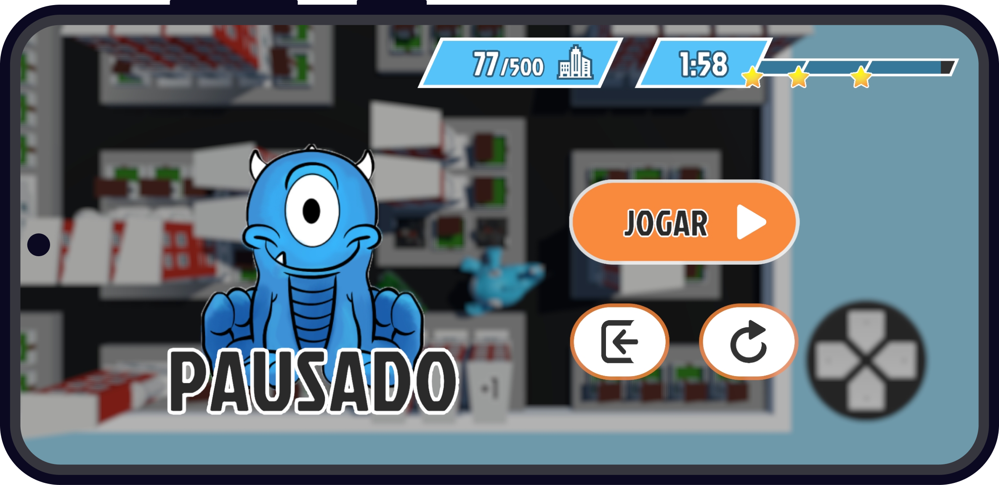
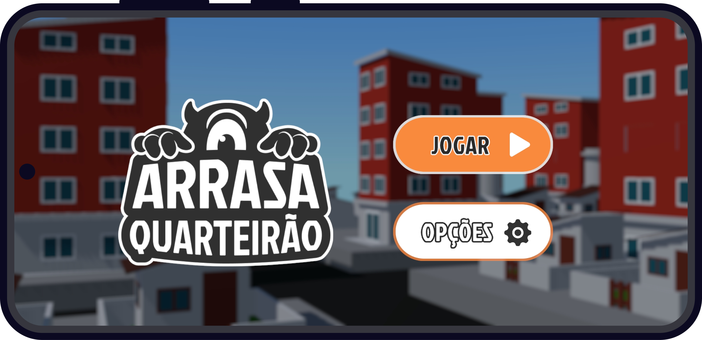
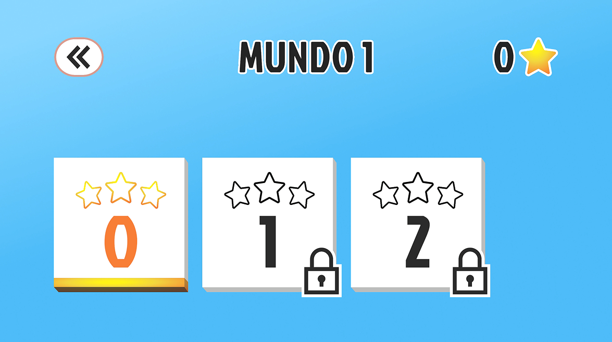
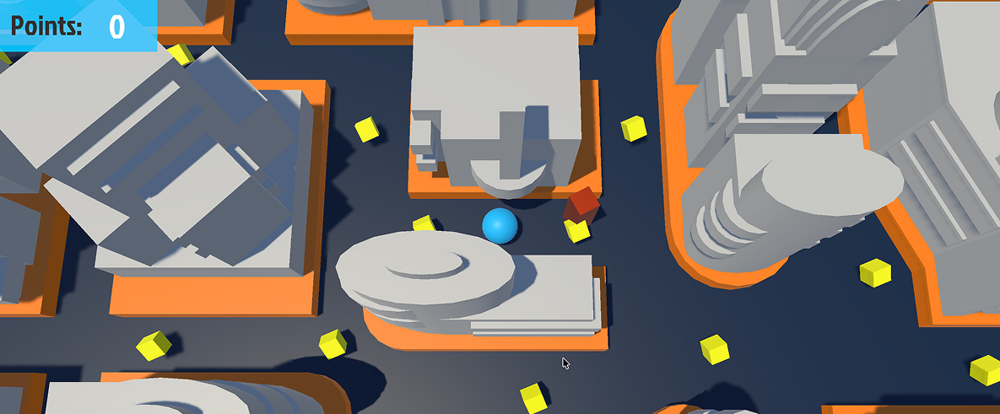
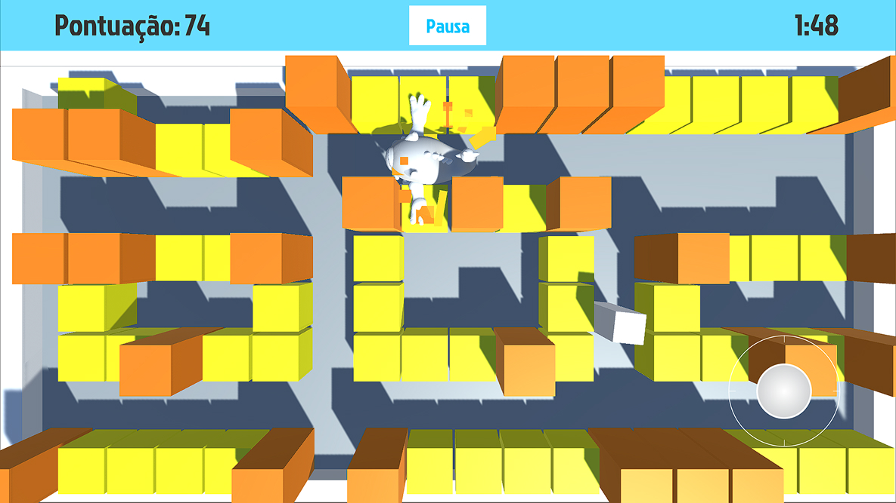
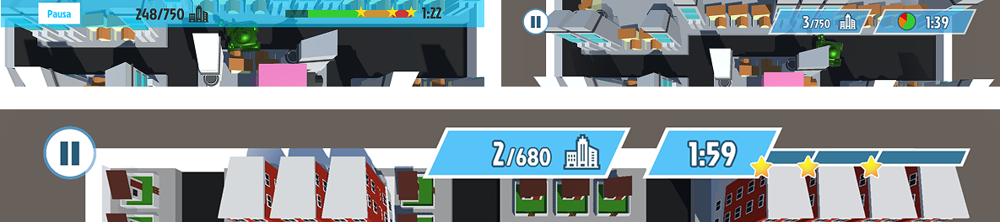
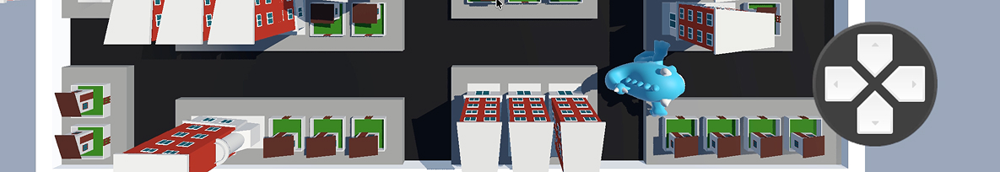
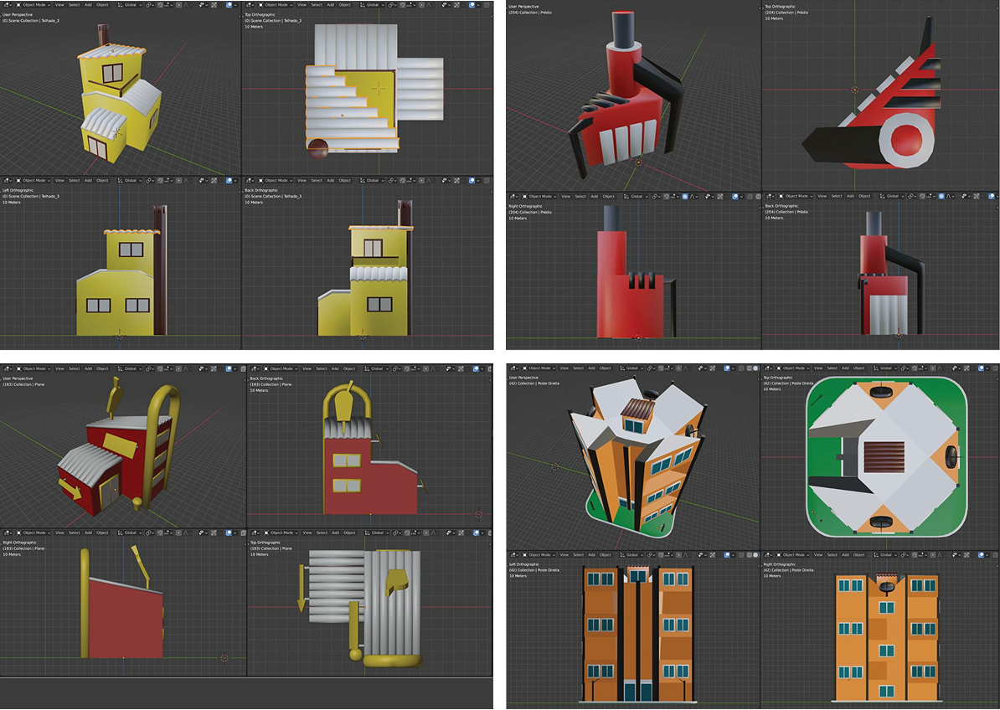

O jogo funciona em um ponto de vista top-down, garantindo visão ampla do que se passa na fase.

O MAQ-11 recebe destaque na UI, aumentando a conexão entre o usuário e os personagens. Além disso, esse elemento também compensa a visão top-down, que acaba por reduzir as oportunidades do jogador ver o personagem de perto.

O laranja utilizado nos botões é complementar ao azul do MAQ-11, destacando os elementos interativos na tela enquanto torna a interface visualmente agradável.

A seleção de fases destaca em dourado a fase atual, e bloqueia as seguintes. No código, esse funcionamento é automatizado para contar o total de estrelas.

GAME DEV
O desenvolvimento começou com a experimentação de uma versão mais simples, que chamamos de Pac-Manhattan. Experimente >>

Recomeçamos do zero para corrigir o feedback obtido no protótipo, como a física e o modo de obter pontos.

Diferentes formas de apresentar o tempo restante foram testadas até chegar ao formato final, que permite facilmente ver a relação entre o tempo passado e quantas estrelas restam.

O joystick permitia uma movimentação livre em uma grid retangular, o que levou a um feedback de que a movimentação era difícil por permitir que o monstro andasse na diagonal. Alteramos para o D-Pad, que favorece a movimentação na mesma estrutura que as ruas.

As construções são modulares, respeitando uma grid fixa (1x1, 1x2, etc) para facilitar a construção das fases e permitir quarteirões de diferentes formatos.

Para responder ao feedback de que as fases não eram dinâmicas o suficiente, será implementada uma guarita, permitindo novas estratégias de abrir e fechar ruas ao jogador.